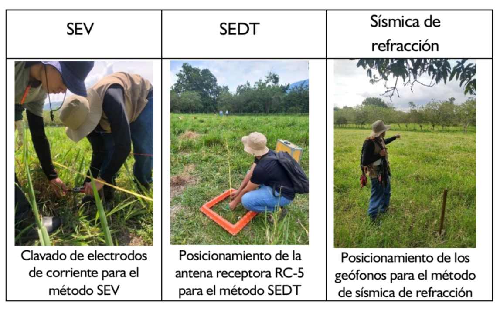

Presentaciones

Salidas de campo
Métodos Geofísicos

Somos el semillero de Investigación en Geofísica Aplicada y Computacional (SIGAC) conformado por estudiantes de Geología de la Universidad Industrial de Santander (UIS). Actualmente nuestro enfoque está dirigido en cuatro líneas de investigación que corresponden al aprendizaje automático, geofísica somera, procesamiento y modelamiento sísmico y geociencias computacional. Nuestro objetivo es reforzar las temáticas relacionadas con la geología y geofísica aplicadas y transmitir el conocimiento a otros estudiantes de la Escuela de Geología de la Universidad Industrial de Santander y al público interesado en geociencias en general mediante la ejecución y elaboración de cursos, talleres, videotutoriales, exposición de pósters y salidas de campo con énfasis en la geofísica computacional.

4 estudiantes de pregrado se encuentran desarrollando auxiliaturas de investigación, 3 de ellos en el proyecto 3925 con el Grupo de Investigación en Diseño de Algoritmos y Procesamiento de Datos Multidimensionales (HDSP) y 1 con el Servicio Geológico Colombiano (SGC). Conoce más aquí.

Este artículo ha sido publicado en la revista Gondwana Research con autoría de tres miembros del semillero: Msc(s). Ana Mantilla, el coordinador Ph.D (c) Yesid Goyes y el director Ph.D (c) Sait Khurama. Encuentralo aquí.

En este tutorial didáctico aprenderás a implementar el método de las poligonales para el cálculo de espesores de estratos rocosos mediante librerías especializadas en el lenguaje de programación Python. Conoce más aquí.